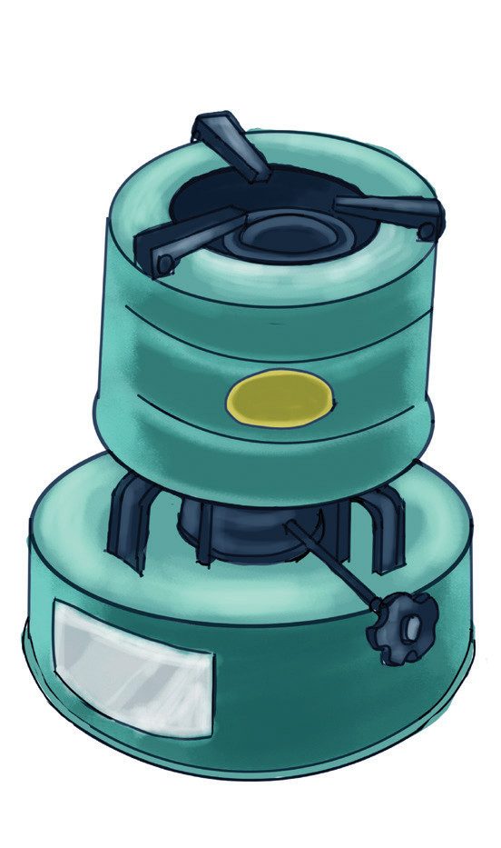
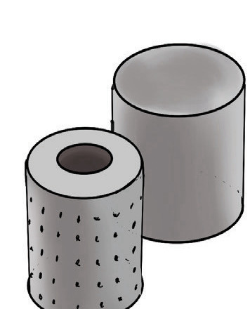
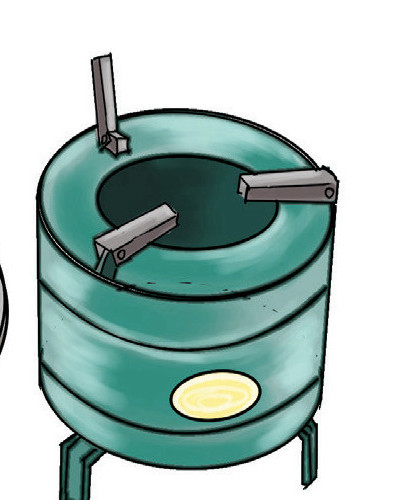
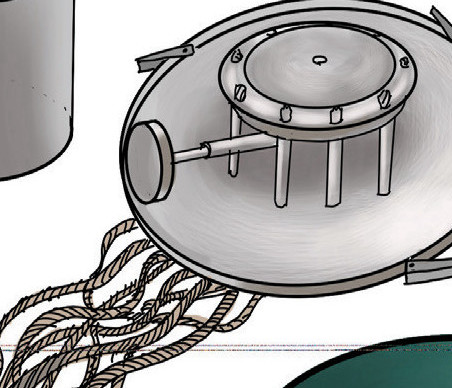
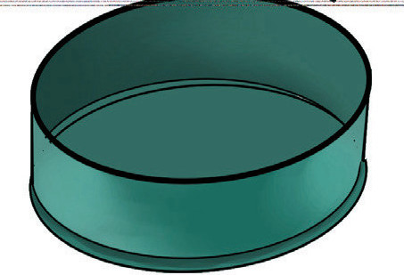

Jiko la mafuta ya taa
Jiko la mafuta ya taa hutumia mafuta ya taa ili kutoa moto. Kuna aina mbili za majiko ya mafuta ya taa. Majiko yanayotumia tambi na yasiyotumia tambi.
Sehemu za jiko linalotumia tambi
Jiko linalotumia tambi limetengenezwa kwa bati lililopakwa rangi ili kuzuia kutu. Jiko lina tangi au chombo cha kuwekea mafuta ya taa. Pia, lina mashine ya kupandisha na kushusha tambi ambayo hufunika tangi. Mashine hiyo pia ina vibomba vya kupitishia tambi. Vilevile, lina kifaa chenye matundu madogo madogo kinachosaidia kupitisha hewa na hivyo kutoa moto usio na masizi. Matundu hayo huwekwa juu ya mfuniko wenye mashine. Aidha, jiko lina sehemu ya nje ambayo ina mafiga. Kielelezo namba 2 kinaonesha jiko hilo na sehemu zake.


vifaa vya kupitisha hewa

mafiga

mashine ya tambi
tambi za jiko

tangi la mafuta
Kielelezo namba 2: Sehemu za jiko la mafuta ya taa linalotumia tambi
Namna ya kutumia jiko la mafuta ya taa la tambi
Unapotumia jiko la mafuta ya taa hakikisha lina mafuta ya kutosha. Ni hatari kuweka mafuta wakati jiko linawaka. Mafuta ya taa huweza kushika moto na kulipuka kama yakiwekwa wakati jiko linawaka. Aidha, usizime jiko kwa kupuliza au kwa kumwagia maji. Kufanya hivyo husababisha moshi mwingi ambao huathiri afya zetu. Zima jiko kwa kushusha tambi zake hadi mwisho.